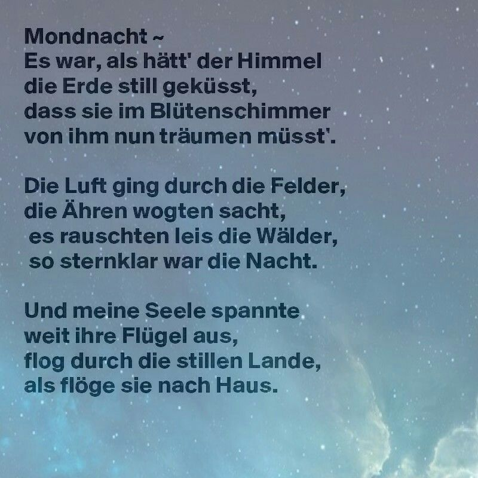
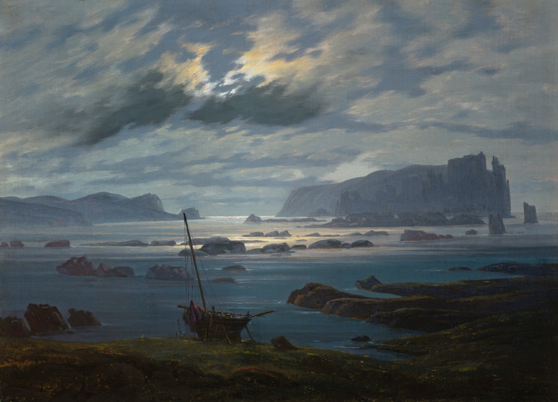
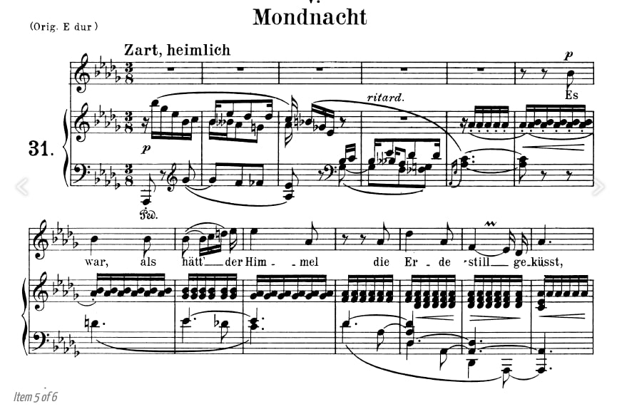

Dieses Lyrikgedicht, das 1837 von Joseph von Eichendorff veröffentlicht wurde, ist ein typisches Werk der Romantik. In diesem Gedicht sehnt sich das lyrische Ich danach, mit der Natur eins zu werden. Die Verschmelzung von Erde und Himmel vermittelt das Gefühl, im Himmel zu sein und in die Heimat zurückzukehren. Es zeigt nicht nur eine friedliche Szene, sondern auch eine Stille, die mit der Natur in Einklang steht.
Als ich das Gedicht zum ersten Mal las, durchströmte mich ein ganz besonderes Gefühl der Leichtigkeit. Im ersten Vers heißt es: „Wie der weite Himmel, der sanft die Erde küsst.“ Wenn die Nacht heranbricht, ist der Himmel nur durch einen orange-gelben, sanften Lichtstreifen von der Erde getrennt. Langsam rückt der Himmel näher zur Erde, der Lichtstreifen verschwindet allmählich, und sie verschmelzen in einer Umarmung.
Mondnacht ist ein geheimnisvolles Treffen von Himmel und Erde.
In der Nacht, mit einem kleinen Spalt im Fenster, liegst du im Bett und bereitest dich darauf vor, einzuschlafen. Dein Ohr wird von der leichten Brise draußen verwöhnt, die sanft über die Erde und die Wälder streicht. Das Getreidefeld bewegt sich wie Wellen, die Blätter rascheln, als ob sie flüstern. Langsam schwebst du empor und fliegst in den Himmel, in die Ferne, die du vermisst.
Im Jahr 1840 vertonte Schumann dieses Gedicht, und seine Art der Vertonung bleibt eindrucksvoll im Gedächtnis. Das erste Mal hörte ich es im Deutschunterricht. Damals dachte ich, dass der Stil des Liedes ähnlich war wie bei „Zion hört die Wächter singen“, „Was mir behagt, ist nur die muntre Jagd“ und „Lieder ohne Worte in E-Dur“, alle hatten eine sanfte Melodie, aber „Mondnacht“ hatte einen Hauch von Frische. Ich erinnere mich noch an den Nachmittag. Es war die letzte Stunde für viele Schüler vor dem Ende des Schultages, und auch die ruhigste Stunde, obwohl niemand wirklich in der Stimmung war, sich zu konzentrieren. Alle wollten einfach nach Hause gehen, und niemand wollte sich mit der Musik beschäftigen, die absolut nichts mit dem Unterricht zu tun hatte. Doch der Lehrer lächelte nur und spielte sie für uns ab. Die ruhige Musik strömte aus dem Lautsprecher und füllte den ganzen Raum. Alle hörten aufmerksam zu, bis die letzten Töne verklangen. Selbst als die Stunde fast vorbei war, packte niemand sofort seine Sachen und rannte hinaus.
Das zweite Mal hörte ich es im Musikunterricht, wo wir die Details des Stückes analysierten. Besonders interessant war die Wahl der Tonarten: E-Dur und H (B)-Dur. Diese Wahl der Tonarten spielte eine große Rolle bei der musikalischen Untermalung dieses Gedichts. Im Deutschen ist „Erde“ die Erde und „Himmel“ der Himmel. Hast du etwas bemerkt? Die beiden Wörter beginnen mit E und H. Schumann hat tatsächlich ein Wortspiel mit der deutschen Sprache in seiner Musik gemacht! H-Dur ist die Dominante von E-Dur, was bedeutet, dass die Grundtonart dieses Stückes E-Dur ist.
Auch wenn man keine Noten lesen kann, lässt sich erkennen, dass der erste Ton (der erste Ton in der dritten Zeile) und der zweite Ton (der erste Ton in der zweiten Zeile) weit voneinander entfernt sind. Schumann nutzt den Abstand zwischen den Tönen, um die Entfernung zwischen Himmel und Erde darzustellen. Die mittlere Linie lässt sich mit einem „Wiedersehen“ beschreiben, da die Musik langsam nach unten gleitet, wie ein „Sanfter Kuss des Himmels auf die Erde“. Die kontinuierlich wiederholten Töne (ab der fünften Zeile) bilden eine Horizontlinie, an der Himmel und Erde aufeinandertreffen. Diese Töne verändern sich ständig, wie Blumen, die im Sonnenuntergang leicht leuchten. Du brauchst dir keine Sorgen zu machen, dass du nicht verstehst, was sie singen – die Komponisten setzen alles daran, dass du die Emotionen verstehst. Du musst einfach die Augen schließen und „die Stimmung“ spüren.
